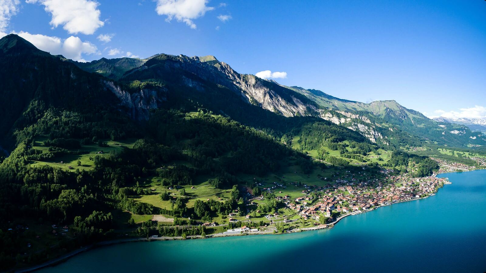

Wir sind ein kleiner Verein aus Brienz und wandern seit 1984 zusammen durch das Berner Oberland. Jeden zweiten Samstag gehen wir auf Tour. Gäste sind jederzeit willkommen!
Gemütliche Rundwanderung mit Schifffahrt zurück nach Brienz.
2 Std. · leicht
Über Alpweiden zum Hinterburgseeli mit Blick auf den See.
4 Std. · mittel
Steiler Aufstieg zum Gipfel, zurück mit der Dampfbahn.
6 Std. · schwer
Wanderverein Brienz
Hauptstrasse 5
3855 Brienz
© 2026 Wanderverein Brienz
Mitglied werden: info@wanderverein-brienz.ch